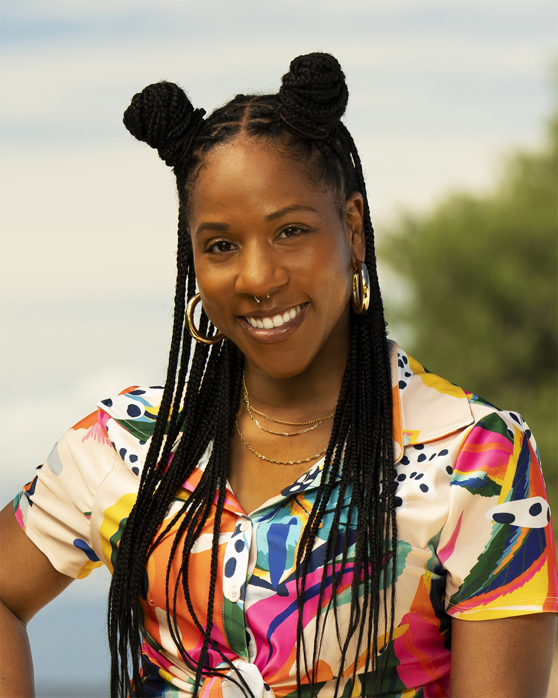
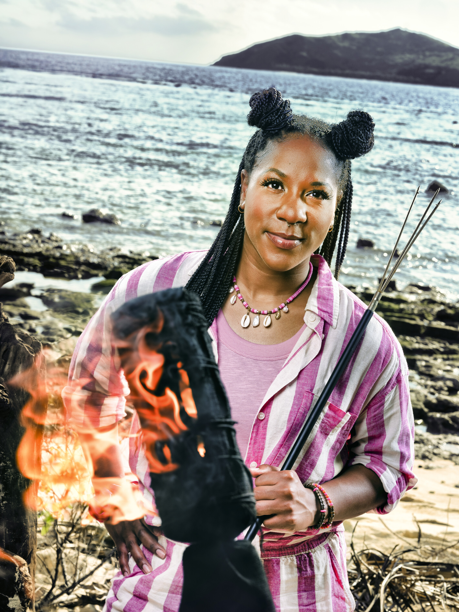

Tiffany Ervin
Kalo Tribe
Age
34
Hometown
Franklin Township, NJ
Residence
Los Angeles, CA
Occupation
Artist / Creative Producer
Previous Season
46 (8th Place)
Status
Active

Season 46

Season 50
About
Tiffany Ervin finished 8th on Season 46, where she was blindsided with an idol in her pocket. Her downfall came from being too focused on her rivalry with Q Burdette (who is also on Season 50, but on the Vatu tribe) and failing to see the larger target forming around her. She returns with a present-focused mindset and has vowed to keep any idol finds secret this time.